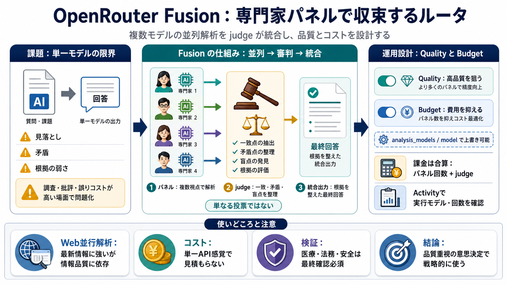

OpenRouter Pricing Calculator & Cost Guide (Jun 2026) - CostGoat
Calculate OpenRouter API costs for 297+ models. [OpenRouter](https://openrouter.ai/models). OpenRouter is a unified API …

Calculate OpenRouter API costs for 297+ models. [OpenRouter](https://openrouter.ai/models). OpenRouter is a unified API …
# OpenRouter: Fusion. Fusion turns your prompt into a small multi-model deliberation. A panel of expert models (see belo…
# OpenRouter experience : r/LLMDevs. Image 1 Go to LLMDevs. Is it just for distributing your api calls to the current ch…
# How to Set Up a Fusion Model. OpenRouter just shipped a Fusion API. Instead of asking one AI model your question, you …
# Model Fusion | OpenRouter. Image 1: Favicon for openrouter. Image 2: Favicon for moonshotai. Image 3: Favicon for nvid…